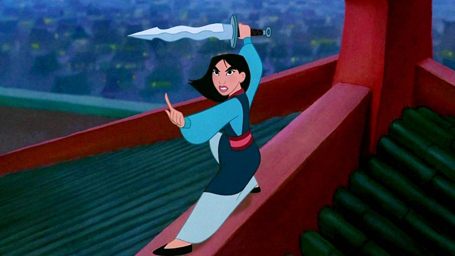

Мулан – це неперевершена воїнка, яка, виступаючи захисницею своїх близьких та батьківщини, протистояла традиціям та суворим правилам суспільства. Вона вирушила у неймовірну подорож, приховуючись під чоловічим виглядом, щоб приєднатися до імперської армії. Її витривалість, сміливість та розумність дозволили їй здобути довіру товаришів і підкорити свої власні перепони.
У маленькому китайському селі жила мужня дівчина на ім'я Мулан. Усі навколо підтримували традиції, але Мулан завжди відчувала, що її серце прагне чогось більшого. Вона мріяла не лише про сімейне життя, але й про велику пригоду. Одного дня народ Китаю отримав звістку про наближення війни. Імператор видав указ, згідно з яким кожний чоловік з кожної родини мав стати на службу у Імперську армію. Задля захисту свого старого і хворого батька, Мулан прийняла неймовірне рішення – вона вирішила прикинутися чоловіком і вступити в армію замість свого батька. Зібравши всі свої сили та хоробрість, Мулан вирушила у небезпечний шлях до тренувального табору. Там вона змагалася з іншими рекрутами, але не зраджувала своєї справжньої суті. Вона була вперта та витривала, незважаючи на всі труднощі. У процесі навчання Мулан завоювала довіру та повагу своїх товаришів. Вони бачили в ній справжнього героя, хоча і не знали її справжньої ідентичності. Мулан довела, що сила та відвага не обмежені статтю, але залежать від духу та внутрішньої сили людини. Коли війна досягла піку, Мулан та її товариші встали на захист своєї країни. Вона відбивалася від ворогів і була нещадною у бою. Завдяки своїм навичкам та винахідливості, Мулан врятувала багато життів і здобула величезний успіх.
Невідомо, чи існувала героїня насправді: історики та літературознавці сперечаються щодо реальності її персони досі. Проте легенда про дівчину, яка служила в армії замість хворого батька, переодягнувшись у чоловіка, стала важливою частиною китайської культури. Якості, які оспівуються в історії - повага старших, хоробрість і скромність - шануються і в сучасному Китаї.
Перший письмовий запис про войовницю — народний «Балада про Мулан», написаний у 386–535 роках. н.е. Через тисячу років Мулан згадується в історичному романі «Суй та Тан», потім в інших літописах та традиційних китайських п'єсах. Широка публіка дізнається про легенду із зародженням китайського кінематографа. Картина 1939 року «Мулан приєднується до армії» знайомить із героїнею весь світ, а диснеївський мультфільм 1998 року робить персонажа важливою частиною ще й західної культури.
Мулан стала культовою героїнею як у китайській, і у західної культурах. Легенда надихнула письменників і режисерів на створення жіночих персонажів, які переодягалися в чоловіків, щоб боротися з ними на рівних: наприклад, вигадана Жанна д'Арк та принцеса Еовін із «Володаря кілець».